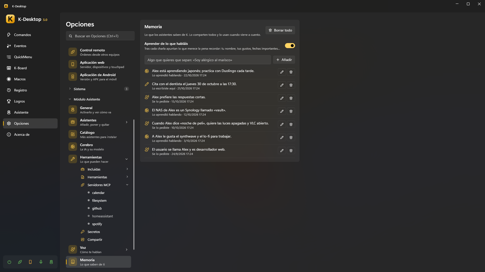
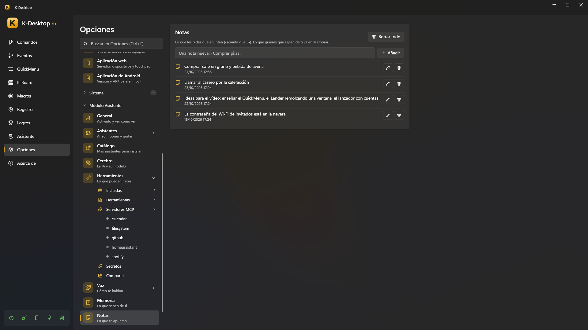
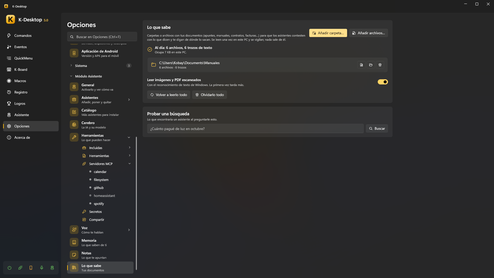

Memoria, notas y documentos
Los asistentes guardan tres cosas distintas, cada una con su página en Opciones → Asistente:
| Qué es | Dices | |
|---|---|---|
| Memoria | Lo que saben de ti: tu nombre, lo que te gusta, fechas importantes | «recuerda que mi jefe se llama Luis» |
| Notas | Lo que les pides que te apunten | «apunta que tengo que comprar leche» |
| Lo que sabe | Tus documentos: carpetas y archivos que leen para contestarte con lo que dicen | «¿qué dice mi contrato sobre la fianza?» |
Todo se queda en tu PC, y lo comparten todos los asistentes.
Memoria

- «Recuerda que…», «acuérdate de que…» lo guarda al momento, sin depender de la IA.
- «¿Qué tienes en la memoria?» te dice lo más importante.
- «Olvida que…» / «olvida lo de…» lo quita (y se puede deshacer).
- Aprender de lo que habláis: tras cada conversación apuntan lo que vale la pena recordar. Cada recuerdo dice de dónde sale: Se lo pediste, Lo aprendió hablando o Lo escribiste aquí.
En la página puedes Añadir algo que quieras que sepan, Editar o Borrar cada recuerdo, o Borrar todo. Cuando una orden encaja con algo que recuerdan, lo usan: «cuando diga "lo de siempre", me refiero a mi comando Trabajo».
Notas

«Apunta que…», «anota…», «apúntame…» guarda una nota; «¿qué tenía apuntado?» o «¿qué tenía que comprar?» las busca. También las cambian hablando: «quita la leche de la lista de la compra», «añade huevos a la lista» (una lista por líneas o en una sola, «Compra: leche, huevos y pan», sigue igual), «borra la nota del fontanero» (si encajan varias, preguntan cuál; todo se puede deshacer desde la actividad). En la página se pueden añadir, editar y borrar. Una respuesta larga de la hoja de lectura se puede guardar como nota con Guardar como nota (ver Respuestas largas).
Lo que sabe (tus documentos)

Añade carpetas (Añadir carpeta…) o archivos sueltos (Añadir archivos…) con tus documentos —apuntes, manuales, contratos, facturas…— y los asistentes te contestan con lo que dicen y te dicen de dónde sale. Se leen una vez en este PC y se vigilan: un archivo nuevo o cambiado se vuelve a leer solo. Nada sale del ordenador.
- Qué se lee: texto y Markdown, PDF, Word (
.docx), PowerPoint (.pptx), páginas web, subtítulos y correos (.eml), y archivos de código o de datos que no sean muy grandes. Con Leer imágenes y PDF escaneados, también imágenes y páginas de PDF sin texto, con el reconocimiento de texto de Windows (la primera vez tarda más). - Qué no se puede: un disco entero, ni carpetas de Windows o de los programas. Las carpetas ocultas se saltan, y también las de librerías y de
compilación de un proyecto (
third_party,vendor,build,dist…), la de estilos y scripts de una página web guardada (Página_files) y las listas de versiones de paquetes (package-lock.json…); el código minificado queda Sin texto. - Mientras lee, la página enseña «Leyendo: 412 de 1.300 archivos», cuánto le queda más o menos y el archivo por el que va (en uno grande, también por qué trozo). Lee sin agobiar al PC y se pone en pausa con un juego a pantalla completa, con K-Desktop en pausa y mientras un asistente contesta. Velocidad de lectura: Suave, Normal o Rápida (más rápida usa más el PC). Pausar la lectura la detiene hasta que pulses Seguir leyendo (lo ya leído se sigue usando).
- Cada carpeta o archivo tiene Abrir la carpeta y Quitar; las carpetas, también Ver los archivos: la lista,
con su propio desplazamiento, con cada archivo y sus trozos, páginas, o por qué no se ha podido leer. Se puede buscar
por nombre o carpeta (también con comodines:
*.pdf,*.c *.h,2026/*,src/**/*.c) y filtrar (Leídos, Por leer, Sin texto o sin poder leer, Quitados). Cada archivo se puede abrir, ver en su carpeta o quitar de lo que sabe (no se lee y se olvida lo leído; Volver a incluir lo devuelve). Una carpeta de un disco que no está conectado conserva lo que ya leyó. - Probar una búsqueda: lo que encontraría un asistente al preguntarle eso, y cuánto ha tardado.
- Volver a leerlo todo y Olvidarlo todo (tus archivos nunca se tocan).
Busca por palabras y por significado: «¿cuánto pagué de luz en octubre?» encuentra la factura de octubre aunque diga «suministro eléctrico». La parte del significado usa EmbeddingGemma, que se descarga con los modelos de voz (Opciones → Voz); sin él, solo encuentra lo que preguntas con las mismas palabras que el documento.
Cuando nada de tus documentos responde, el asistente lo dice en vez de inventárselo.
Archivos que le das
Soltarle archivos a un asistente (o preguntarle por uno) es otra cosa: se leen solo para esa orden, sin añadirlos a Lo que sabe. Ver Soltarle archivos.